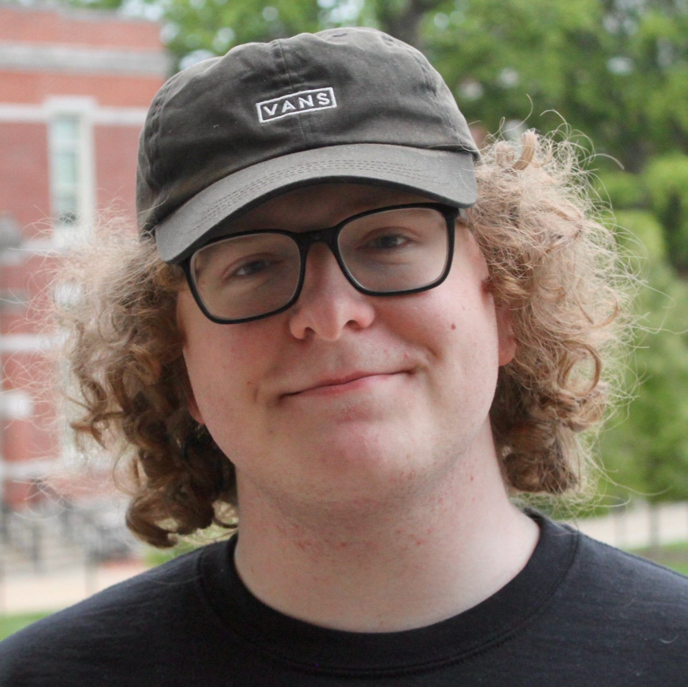

Profile
Hello! I am Ashton Wooster, a Computer Science & IT Senior at the University of Missouri. I serve as the Vice President of Finance for the National Association of Engineering Student Councils and the Chair of TigerHacks. Through these roles, I hope to expand the reach, interest, and engagement of engineering programs across all levels of education. I also pursue research in quantum computing through the Interdisciplinary Data Analytics and Search Lab. Here, I have developed robust defense systems for future multitenant quantum computers, quantum networking tools for education, and helped create generative AI systems for quantum circuits. I have been awarded the Remington R. Williams award and Outstanding Computer Science Sophomore award. Outside of school, I love playing card and board games including: Magic the Gathering, Clank, and Catan. I’ve been studying Korean for two years and hope to continue my studies there after graduating.
Download my Resume